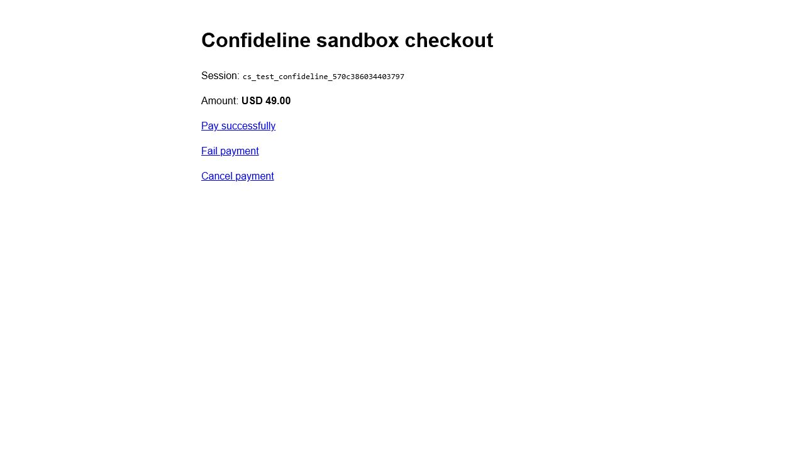

Факт проверки · 2026-06-04
Preflight тестового заказа: платежная песочница работает
Проверен нижний слой оплаты без реальных денег: fake checkout, success, cancel, fail, refund и signed webhook. Это дает безопасную основу для следующего шага — связать платежный успех с заказом, вопросом, консультацией, чатом и админкой.
payment sandbox PASSконсультация еще не доказанабез реальных писем
Короткий вывод PM
Решение: использовать локальную payment sandbox как обязательный safe-provider для тестового заказа. Следующий блок для Игоря — подключить ее к локальному/test Yii2 flow через `CONFIDELINE_STRIPE_API_BASE` и доказать, что успешная fake-оплата создает/обновляет заказ и консультацию, а не только payment intent.
Проверка выполнена
`run-sandbox-scenarios.php` прошел success/cancel/fail/refund/webhook.
Реальные деньги не использовались
Проверка шла только на `127.0.0.1:8787`, без Stripe keys и без карт.
Есть adapter для Игоря
В проекте есть `ADAPTER_SNIPPET_RU.md`: куда вставить sandbox API base и checkoutUrl.
Главный риск остается
Нет runtime proof, что оплата создает консультацию и видна эксперту/админу.
Скрин доказательства

Матрица результата
| Блок | Статус | Доказательство | Вывод PM | Следующее действие |
|---|---|---|---|---|
| Локальная платежная песочница | PASS | Сценарии success, cancel, fail, refund, webhook прошли. | Можно использовать как safe-provider. | Подключить к локальному/test сайту. |
| Fake checkout UI | PASS | Скрин checkout на 127.0.0.1. | Есть наглядный proof без реального Stripe. | Использовать в QA/demo. |
| Adapter для Yii2 | WARN | `ADAPTER_SNIPPET_RU.md` описывает изменения. | Путь внедрения есть, но runtime не доказан. | Передать Игорю в co2p-пакете. |
| Связь сайта с sandbox | RED | Нет proof текущего Confideline checkout через sandbox. | Тестовый заказ еще не готов. | Запустить локальный/test сайт с env. |
| Заказ → консультация → чат | RED | Нет proof после fake success. | Это главный блокер платной услуги. | Доказать mapping payment success → order → consultation. |
| Уведомления/no-send | WARN | Email-пакет есть отдельно, связка с заказом не доказана. | Реальные письма не включать. | Проверить event log на test order. |
| Support/refund | WARN | Refund в sandbox работает, но тикет не доказан. | Платежный refund не равен support-процессу. | Проверить тикет по тестовой консультации. |
Связанные материалы
Вывод проверкиКомандный proof и PM-вывод.
CSV результатаТабличная версия матрицы.
Checkout session JSONFake session для proof-скрина.
План runtime-проверкиПолный маршрут заказа до консультации и поддержки.
Пакет ИгорюЧто нужно реализовать или подтвердить дальше.
Красный маршрутПочему этот блок идет первым.